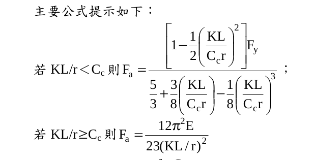
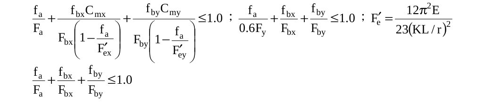
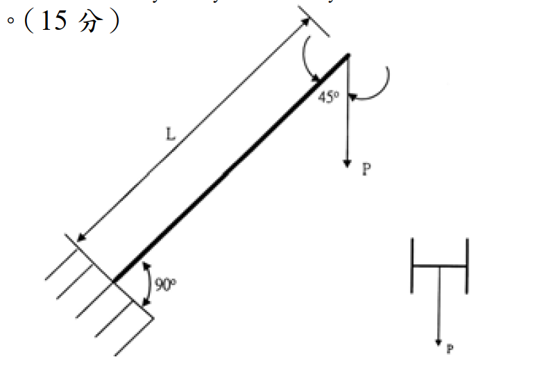
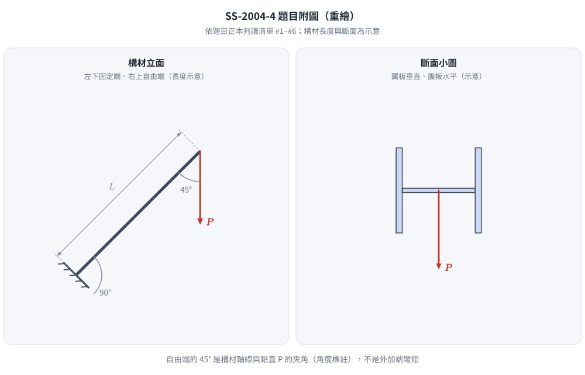
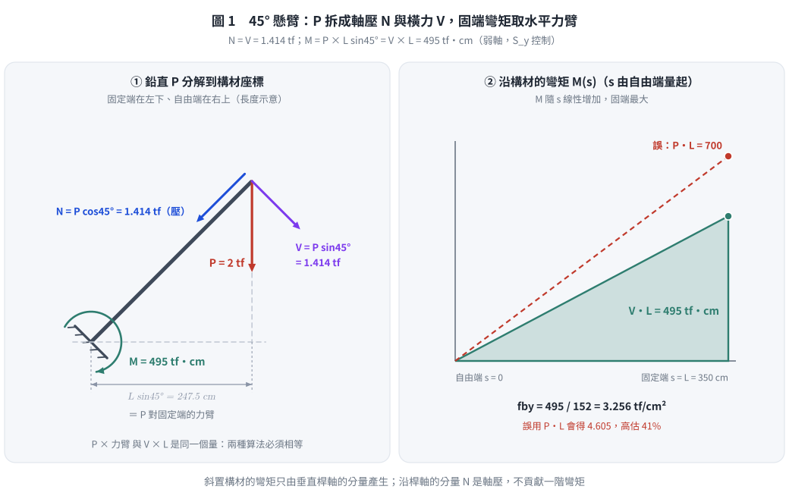
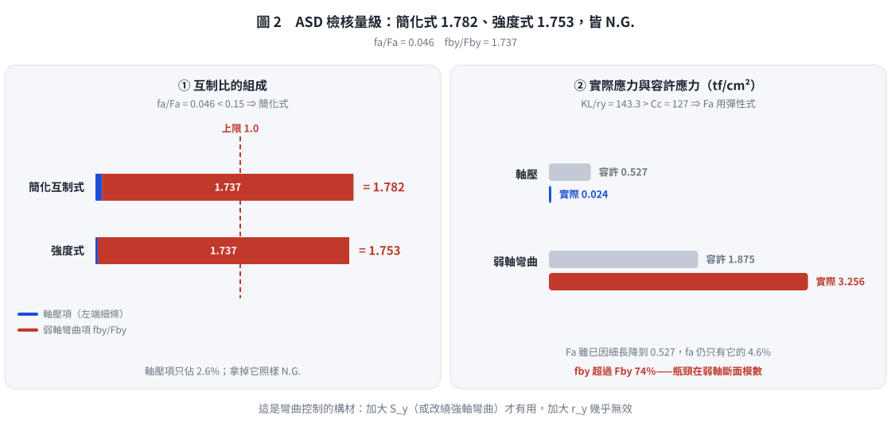

📄 題目正本：考卷原文・附圖・判讀清單（待確認）
SS-2004-4 題目正本
本檔只記錄考卷上寫了什麼、圖上畫了什麼，不含任何解法。解析見同資料夾
SS-2004-4.md。
判讀清單經使用者確認前，狀態為「待確認」；確認後本檔原則上不再修改（改動須回考卷原圖並記 log）。
| 項目 | 內容 |
|---|---|
| 考卷 | raw/exams/SS-2004_鋼結構設計.pdf 第 2 頁（全一張・背面），第四題 |
| 考年 | 民國 93 年（2004） |
| 配分 | 25 分（㈠ 5、㈡ 5、㈢ 15） |
| 附圖 | 1 張（懸臂構材立面與斷面），SS-2004-4-fig-1.png；題內公式截圖 SS-2004-4-eqn-1.png、SS-2004-4-eqn-2.png |
| 判讀狀態 | 待確認（轉錄 2026-11-02，PyMuPDF 110 dpi 全頁＋附圖 400 dpi 局部目視＋抽出文字核對，盲讀後才比對既有解析） |
1. 考卷原文（逐字）
四、依據我國鋼結構容許應力設計法規範及解說：
㈠試述為何要採用 $C_m$ 係數？（5 分）
㈡原本 $C_m = 0.6-0.4\,(M_1/M_2) \ge 0.4$ 的大於等於 0.4 為何我國規範不再採用？（5 分）
㈢一支懸臂鋼構材，自由端承受垂直力 $P$ = 2000 kg，構材長度 $L$ = 350 cm，構材為結實斷面，強軸彈性斷面模數 $S_x$ = 451 cm³，弱軸彈性斷面模數 $S_y$ = 152 cm³，迴轉半徑 $r_x$ = 8.81 cm，$r_y$ = 5.13 cm，斷面積 $A$ = 59 cm²，彈性模數 $E$ = 2.1×10³ t/cm²，$F_y$ = 2.5 t/cm²，忽略自重與剪應力的影響，且強軸有充分側向支撐，構材僅會繞弱軸彎曲，有效長度係數 $K$ = 2.1，$C_c$ = 127，$F_{bx}$ = 0.66 $F_y$，$F_{by}$ = 0.75 $F_y$，$C_m$ = 0.85，試求構材是否滿足容許應力設計法的規定。（15 分）
主要公式提示如下：（見 §2）
2. 考卷給的公式、附表與參數
- 題文：$P$ = 2000 kg；$L$ = 350 cm；$S_x$、$S_y$、$r_x$、$r_y$、$A$、$E$、$F_y$（照錄於 §1）；$K$ = 2.1；$C_c$ = 127；$F_{bx} = 0.66F_y$、$F_{by} = 0.75F_y$；$C_m$ = 0.85。
- 「主要公式提示如下」照錄：
$$\text{若 } KL/r < C_c \text{ 則 } F_a = \frac{\left[1 - \dfrac12\left(\dfrac{KL}{C_cr}\right)^2\right]F_y}{\dfrac53 + \dfrac38\left(\dfrac{KL}{C_cr}\right) - \dfrac18\left(\dfrac{KL}{C_cr}\right)^3}\;;\qquad \text{若 } KL/r \ge C_c \text{ 則 } F_a = \frac{12\pi^2E}{23(KL/r)^2}$$
$$\frac{f_a}{F_a} + \frac{f_{bx}C_{mx}}{F_{bx}\left(1 - \dfrac{f_a}{F'_{ex}}\right)} + \frac{f_{by}C_{my}}{F_{by}\left(1 - \dfrac{f_a}{F'_{ey}}\right)} \le 1.0\;;\quad \frac{f_a}{0.6F_y} + \frac{f_{bx}}{F_{bx}} + \frac{f_{by}}{F_{by}} \le 1.0\;;\quad F'_e = \frac{12\pi^2E}{23(KL/r)^2}$$
$$\frac{f_a}{F_a} + \frac{f_{bx}}{F_{bx}} + \frac{f_{by}}{F_{by}} \le 1.0$$


- 公式提示沒有寫各交互式的適用條件（$f_a/F_a$ > 0.15 或 ≤ 0.15），只列出三式。
- $P$ 與構材的夾角題文沒寫，只在圖上標 45°；題文也沒有給端點彎矩。
- 卷首注意事項：不必抄題，作答時請將試題題號及答案依照順序寫在試卷上；可以使用電子計算器。
3. 附圖

圖面文字照錄：L；45°；P；90°；P。
4. 判讀清單
「把握」標不確定者請優先確認；解讀類項目（題目用字的意思）另標「解讀」。
| # | 項目 | 判讀 | 圖上／題文依據 | 把握 |
|---|---|---|---|---|
| 1 | $P$ 與構材夾角 | 構材軸線與鉛直 $P$ 夾 45° → $P$ 分為沿軸向 $P\cos45°$ 與垂直構材 $P\sin45°$ | 圖標 45°（400 dpi） | 確定 |
| 2 | 軸力性質 | 軸向分量指向固定端 → 壓力 | $P$ 向下作用於右上自由端、固定端在左下 | 確定（解讀） |
| 3 | 固定端 | 構材與牆面垂直（90°），固定支承 | 圖標 90°＋牆面斜線 | 確定 |
| 4 | 彎曲軸 | $P$ 平行翼板 → 繞弱軸彎曲，與題文「僅會繞弱軸彎曲」一致；$f_{bx}$ = 0 | 斷面小圖（翼板垂直、P 鉛直） | 確定 |
| 5 | 自由端弧箭頭 | 兩個弧形箭頭為 45° 角度標註，不是外加彎矩 | 兩箭頭分別指向構材與 $P$ 作用線，45° 字樣在其間；題文未給端彎矩 | 確定（解讀） |
| 6 | $L$ | 350 cm 為沿構材軸長度 | 尺寸線平行構材 | 確定 |
| 7 | 有效長度 | $K$ = 2.1（題給），$KL$ = 735 cm；題文只給一個 $K$ | 題文 | 確定 |
| 8 | 交互式條件 | 公式提示未標適用條件，考生須自行依 $f_a/F_a$ 選式 | 題內公式照錄 | 確定 |
| 9 | ㈠㈡ | 說明題，依我國容許應力設計法規範及解說 | 題文 | 確定 |
轉錄：2026-11-02（SS-U1-3 題目正本推廣・批 1）
考題編號：SS-2004-4
主分類： SS-U1-3 梁柱桿件
副分類： （無）
設計法： ASD
標籤： 梁柱桿件 ASD Cm係數 懸臂柱 弱軸彎曲 45°斜置構材 互制方程式 有效長度 Cm下限0.4廢止 M1/M2正負號
1. 題目（考卷原文見題目正本）
考卷原文、公式提示、附圖與判讀清單（待確認）見
SS-2004-4-problem.md。本節只列解題時最容易讀錯的地方與本解使用的記號；題意以題目正本為準。

題目附圖重繪（依題目正本判讀清單 #1–#6）。自由端的 45° 是構材軸線與鉛直 $P$ 的夾角標註，不是外加端彎矩；$P$ 平行翼板，構材繞弱軸彎曲。
常見誤讀
| 項目 | 正確判讀 | 常見誤讀 |
|---|---|---|
| ㈡ 問什麼 | 舊式 $C_m = 0.6-0.4(M_1/M_2) \geq 0.4$ 的「$\geq 0.4$」為何我國規範不再採用 | 讀成「此式的適用條件與 0.4 下限的工程意義」，反而論證下限有必要（舊版解析即如此） |
| $M_1/M_2$ 正負號 | 雙曲率為正、單曲率為負（規範 8.2 節本文） | 正負號顛倒（舊版解析即如此） |
| 自由端弧形箭頭 | 45° 角度標註 | 外加端彎矩 |
| 彎曲軸 | $P$ 平行翼板 → 繞弱軸，$f_{bx} = 0$ | 繞強軸 |
| 交互式條件 | 考卷公式提示沒寫適用條件，須依 $f_a/F_a$ 自行選式 | 以為考卷有給 |
本解記號： $P = 2$ tf；$L = 350$ cm（沿構材軸）；$N = P\cos45°$（沿桿軸，壓）、$V = P\sin45°$（垂直桿軸）；$M = V \cdot L$（$= P \times L\sin45°$）；$K = 2.1$、$C_c = 127$；$F_y = 2.5$、$E = 2100$ t/cm²；$F_{by} = 0.75F_y$；$C_m = 0.85$（題給）。
2. 考題核心精神與出題者意圖
本題三小題涵蓋：
- 觀念題 ㈠（為何用 $C_m$）：考驗對 ASD 梁柱設計哲學的理解——$C_m$ 是等效均勻彎矩係數，反映實際彎矩分佈對穩定性的影響
- 觀念題 ㈡（為何廢止 $C_m \geq 0.4$）：考的是下限的來歷——0.4 原為梁的側向扭轉挫屈而訂，不適用於梁柱的彎矩放大，以及 Zandonini（1985）證實取消後 $C_m$ 式仍適用
- 計算題：45° 斜置懸臂構材，需正確分解荷載為軸力 + 橫向力，再進行 ASD 互制公式驗算
3. 解題戰略地圖與陷阱分析
作戰計畫：
1. 回答 (一)(二) 觀念題
2. 分解 45° 斜置垂直荷載為軸力與橫向分量
3. 計算 $f_a$（軸壓應力）與 $f_{by}$（弱軸彎曲應力）
4. 計算允許壓縮應力 $F_a$（依 $KL/r_y$ 與 $C_c$ 判斷公式）
5. 判斷 $f_a/F_a$ 是否 $\geq 0.15$，選用適當互制方程式
6. 代入互制公式，得出結論
陷阱分析：
| 陷阱 | 說明 | 應對策略 |
|---|---|---|
| ⚠️ 45° 荷載分解方向 | P 為鉛直力，需分解至「沿桿軸」與「垂直桿軸」兩分量 | 軸壓 $= P\cos45°=P/\sqrt{2}$，橫向 $= P\sin45°=P/\sqrt{2}$ |
| ⚠️ 弱軸用 $r_y$ 計算 $F_a$ | 弱軸彎曲 → 弱軸挫屈控制 → $KL/r_y$ | $r_y = 5.13\ \text{cm}$，不用 $r_x$ |
| ⚠️ $KL/r > C_c$ → 用尤拉公式 | $143.3 > 127$ → 進入彈性挫屈區 | $F_a = 12\pi^2E/[23(KL/r)^2]$ |
| ⚠️ $f_a/F_a < 0.15$ → 用簡化式 | 軸壓力極小，採簡化互制式 | $f_a/F_a + f_{by}/F_{by}$ 即可 |
| ⚠️ ㈡ 問的是「為何不再採用」 | 不是問 0.4 下限的意義，而是問它為何被廢止 | 依規範解說 C8.2：下限原為梁 LTB 而訂（$C_b$ 上限 2.3 之倒數），不適用於彎矩放大；Zandonini (1985) |
| ⚠️ $C_m$ 選用款別 | 懸臂自由端可側移（$K = 2.1$），屬第 (1) 款「可側向位移構架」→ 0.85；第 (2) 款 $0.6-0.4M_1/M_2$ 只用於有側撐、兩端點間無橫向載重 | 題目已給 $C_m = 0.85$；本題 $f_a/F_a < 0.15$ 用簡化式，$C_m$ 不進入計算 |
3.5 變數層次分析（Variable Hierarchy Analysis）
複習提示：解題後，在每個卡住的知識點「卡關?」欄標記
⚠；第二次複習時只看有⚠的項目。
最終目標： 說明 $C_m$ 係數概念與 $\geq 0.4$ 下限廢止的理由 → 分解 45° 斜置懸臂構材荷載 → ASD 梁柱互制驗算（彈性挫屈區）
主要公式（$\boxed{\phantom{x}}$ = 未知，待推導）
$$N = P\cos45°,\quad V = P\sin45° \quad \text{（荷載分解）}$$
$$\boxed{M} = V \times L \quad \text{（懸臂固端彎矩）}$$
$$\boxed{f_a} = N/A,\quad \boxed{f_{by}} = M/S_y$$
$$\frac{KL}{r_y} > C_c \Rightarrow \boxed{F_a} = \frac{12\pi^2 E}{23(KL/r)^2} \quad \text{（彈性挫屈區）}$$
$$\frac{f_a}{F_a} < 0.15 \Rightarrow \frac{f_a}{F_a} + \frac{f_{by}}{F_{by}} \leq 1.0 \quad \text{（簡化式）}$$
L1：題目直接給定
| 符號 | 數值 | 說明 |
|---|---|---|
| $P$ | 2 tf（2000 kg） | 頂端垂直靜載重 |
| $L$ | 350 cm | 構材長度 |
| $K$ | 2.1 | 懸臂有效長度係數 |
| $C_c$ | 127 | 彈性/非彈性分界細長比 |
| $S_x$ | 451 cm³ | 強軸斷面模數 |
| $S_y$ | 152 cm³ | 弱軸斷面模數 |
| $r_x$ | 8.81 cm | 強軸迴轉半徑 |
| $r_y$ | 5.13 cm | 弱軸迴轉半徑 |
| $A$ | 59 cm² | 斷面積 |
| $E$ | 2100 tf/cm² | 彈性模數 |
| $F_{bx}$ | $0.66F_y$ | 強軸允許彎曲應力 |
| $F_{by}$ | $0.75F_y$ = 1.875 tf/cm² | 弱軸允許彎曲應力 |
| $C_m$ | 0.85 | 等效均勻彎矩係數（直接給定） |
| 構材方向 | 弱軸彎曲 | 橫向荷載沿弱軸 |
L2：需知識點推導
Step 1：荷載分解（45° 斜置）
| 符號 | 公式 / 來源 | 卡關? |
|---|---|---|
| $N$（軸壓） | $P\cos45° = 2/\sqrt{2} = 1.414$ tf | |
| $V$（弱軸橫向） | $P\sin45° = 2/\sqrt{2} = 1.414$ tf | |
| $M$（固端） | $V \times L = 1.414 \times 350 = 495$ tf·cm |
Step 2：實際應力
| 符號 | 公式 / 來源 | 卡關? |
|---|---|---|
| $f_a$ | $N/A = 1.414/59 = 0.024$ tf/cm² | |
| $f_{by}$ | $M/S_y = 494.97/152 = 3.256$ tf/cm² | |
| $f_{bx}$ | 0（無強軸彎矩） |
Step 3：允許壓縮應力（彈性挫屈區）
| 符號 | 公式 / 來源 | 卡關? |
|---|---|---|
| $KL/r_y$ | $2.1 \times 350 / 5.13 = 143.3$ | |
| 判斷 | $143.3 > C_c = 127$ → 彈性挫屈區 | |
| $F_a$ | $12\pi^2 E / [23(143.3)^2] = 0.527$ tf/cm² |
Step 4：互制方程式驗算
| 符號 | 公式 / 來源 | 卡關? |
|---|---|---|
| $f_a/F_a$ | $0.024/0.527 = 0.046 < 0.15$ → 簡化式 | |
| 簡化式 | $0.0455 + 3.256/1.875 = 0.0455 + 1.7368 = 1.782 > 1.0$ ❌ | |
| 強度式 | $0.016 + 1.737 = 1.753 > 1.0$ ❌ |
L3：深層知識（不懂就卡住）
| 知識點 | 說明 | 卡關? |
|---|---|---|
| $C_m$ 係數的物理意義 | 等效均勻彎矩係數，校正非均勻彎矩分佈對穩定性的有利影響 | |
| $C_m = 0.6-0.4(M_1/M_2)$ 適用條件與正負號 | 第 (2) 款：有側撐、彎曲平面兩端點間無橫向載重；雙曲率 $M_1/M_2$ 為正、單曲率為負；懸臂（可側移）屬第 (1) 款 $C_m = 0.85$ | |
| $\geq 0.4$ 下限為何廢止 | 1978 AISC 收錄、1986 AISC-LRFD 與我國規範不採用；原為梁的側向扭轉挫屈而訂（$1/C_{b,\max} = 1/2.3 \approx 0.43$），不適用於彎矩放大 | |
| ASD 柱設計 $C_c$ 分界 | $KL/r < C_c$ 非彈性；$> C_c$ 改用尤拉公式，$F_a$ 大幅降低 | |
| 弱軸彎曲的嚴重性 | $S_y = 152$ vs $S_x = 451$，弱軸抗彎只有強軸 33%；方向選擇至關重要 | |
| $f_a/F_a < 0.15$ 判斷 | 軸壓比小於 0.15 才用簡化式；否則需用含 $C_m/(1-f_a/F'_e)$ 的穩定式 | |
| $F'_e$（尤拉彈性挫屈應力） | $12\pi^2E/[23(KL/r)^2]$，既是 $F_a$（彈性區）也出現在分母放大係數中 |
4. 步驟化詳細計算過程
(一) $C_m$ 係數的意義（5分）
$C_m$（等效均勻彎矩係數，Equivalent Moment Factor） 用於 ASD 梁柱穩定互制公式中，目的是：
- 校正彎矩分佈形狀的影響：穩定公式的推導假設構材承受「均勻彎矩（uniform moment）」，此時放大效果最嚴重。當實際彎矩分佈非均勻（如三角形、拋物線）時，實際的二次效應較小。
- 換算為等效均勻彎矩：$C_m \leq 1.0$ 表示實際彎矩分佈比均勻彎矩「溫和」，允許承受更大的彎矩；$C_m = 1.0$ 為最保守，等同均勻彎矩假設。
- 物理意義：$C_m/(1 - f_a/F'_e)$ 是考慮 P-δ 效應後的放大係數，$C_m < 1.0$ 反映非均勻彎矩對穩定性的有利影響。
(二) $C_m \geq 0.4$ 的下限為何不再採用（5分）
先釐清式子本身（我國容許應力設計法 8.2 節第 (2) 款）：$C_m = 0.6 - 0.4(M_1/M_2)$ 用於含斜撐構架中的受束制壓力構材、且彎曲平面兩端點間無橫向載重；$M_1/M_2$ 為兩端較小與較大彎矩之比，構材受彎成雙曲率時為正值、單曲率時為負值。故單曲率均勻彎矩（$M_1/M_2 = -1$）得 $C_m = 1.0$（最不利），雙曲率反對稱（$M_1/M_2 = +1$）得 $C_m = 0.2$（最有利）——0.4 下限只在雙曲率一側（$M_1/M_2 > 0.5$）才會起作用。
下限 0.4 的來歷與廢止理由（規範解說 C8.2）：
- 來歷：「$\geq 0.4$」收錄於 1978 年版 AISC 規範；1986 年版 AISC-LRFD 規範及我國規範均已不再採用。
- 用錯地方：這個 0.4 主要是針對梁的側向扭轉挫屈而訂，並不適用於梁柱彎矩放大（P-δ）的修正。梁的側向扭轉挫屈以 $C_b$ 修正，$C_b$ 上限為 2.3，其倒數 $1/2.3 \approx 0.43$ 與 0.4 十分接近——0.4 是把 LTB 的彎矩梯度上限搬到 $C_m$ 上，對彎矩放大並無依據。
- 研究證實不需要：Zandonini（1985）指出，取消 0.4 的限制後，$C_m$ 公式仍可適用於彎矩放大效應的修正。
補充：取消後為何不會不安全。 $C_m$ 很小（接近反對稱雙曲率）時，構材最大彎矩發生在端部而非跨中，此時由不含 $C_m$ 的強度式 $f_a/0.6F_y + f_b/F_b \leq 1.0$（端部斷面檢核）控制；穩定式只負責跨中的二階放大，不需要人為的地板值。SS-2003-4（$C_m = 0.2$，強度式控制）即為一例。
答題要點： ① 0.4 原為梁的側向扭轉挫屈而訂（與 $C_b \leq 2.3$ 的倒數相當），不適用於彎矩放大；② Zandonini（1985）證實取消後 $C_m$ 式仍適用；③ 端部斷面強度另由強度式檢核。
(三) 45° 懸臂梁柱 ASD 驗算（15分）
4.1 荷載分解
構材斜置 45°，自由端承受鉛直向下力 $P = 2000\ \text{kg} = 2\ \text{tf}$：
$$\text{沿桿軸壓力（軸壓）：}\quad N = P\cos 45° = \frac{2}{\sqrt{2}} = \sqrt{2} \approx 1.414\ \text{tf（壓縮）}$$
$$\text{垂直桿軸橫向力（弱軸彎曲）：}\quad V = P\sin 45° = \frac{2}{\sqrt{2}} = \sqrt{2} \approx 1.414\ \text{tf}$$
因構材弱軸方向承受橫向載重，彎矩作用於弱軸（$S_y$ 控制）
4.2 固端彎矩（懸臂）
$$M = V \times L = \sqrt{2} \times 350 = 494.97 \approx 495\ \text{tf}\cdot\text{cm}$$

圖 1 $P$ 拆成軸壓 $N$ 與橫力 $V$，固端彎矩等於 $P$ 乘水平力臂（$= V \cdot L$）。這張圖攔的是把整個 $P$ 當橫力而得 $M = P \cdot L = 700$ tf·cm（$f_{by}$ 高估 41%）。
4.3 實際應力
軸壓應力：
$$f_a = \frac{N}{A} = \frac{\sqrt{2}}{59} = \frac{1.414}{59} = \boxed{0.02397\ \text{tf/cm}^2}$$
弱軸彎曲應力：
$$f_{by} = \frac{M}{S_y} = \frac{494.97}{152} = \boxed{3.256\ \text{tf/cm}^2}$$
（無強軸彎曲，$f_{bx} = 0$）
4.4 允許應力
弱軸彎曲允許應力：
$$F_{by} = 0.75 F_y = 0.75 \times 2.5 = \boxed{1.875\ \text{tf/cm}^2}$$
細長比（弱軸，控制）：
$$\frac{KL}{r_y} = \frac{2.1 \times 350}{5.13} = \frac{735}{5.13} = \boxed{143.3}$$
判斷：$KL/r_y = 143.3 > C_c = 127$ → 彈性挫屈區，採尤拉公式：
$$F_a = \frac{12\pi^2 E}{23\left(\dfrac{KL}{r}\right)^2} = \frac{12\pi^2 \times 2100}{23 \times 143.3^2} = \frac{248{,}714}{23 \times 20{,}535} = \frac{248{,}714}{472{,}305} = \boxed{0.527\ \text{tf/cm}^2}$$
4.5 ASD 互制方程式驗算
判斷適用公式：
$$\frac{f_a}{F_a} = \frac{0.02397}{0.527} = 0.0455 < 0.15$$
→ 採簡化互制公式：
$$\frac{f_a}{F_a} + \frac{f_{by}}{F_{by}} \leq 1.0$$
$$0.0455 + \frac{3.256}{1.875} = 0.0455 + 1.7368 = \boxed{1.782 > 1.0\ ❌}$$
參考：強度方程式（$f_a/F_a \leq 0.15$ 時規範以上述簡化式取代穩定式與強度式，此處僅示意斷面強度同樣不足）：
$$\frac{f_a}{0.6F_y} + \frac{f_{by}}{F_{by}} = \frac{0.024}{1.5} + \frac{3.256}{1.875} = 0.016 + 1.737 = \boxed{1.753 > 1.0\ ❌}$$
4.6 結論
$$\boxed{\text{本構材不滿足 ASD 梁柱互制需求，設計 NG}}$$
| 驗算項目 | 計算值 | 允許值 | 結果 |
|---|---|---|---|
| $f_{by}$ 單獨 | $3.256\ \text{tf/cm}^2$ | $F_{by} = 1.875\ \text{tf/cm}^2$ | ❌ 超出 $1.74\times$ |
| 簡化互制 $f_a/F_a + f_{by}/F_{by}$ | $1.782$ | $\leq 1.0$ | ❌ |
| 強度方程式 $f_a/0.6F_y + f_{by}/F_{by}$ | $1.753$ | $\leq 1.0$ | ❌ |
主要失敗原因： 弱軸彎曲應力 $f_{by} = 3.256\ \text{tf/cm}^2$ 遠超允許彎曲應力 $F_{by} = 1.875\ \text{tf/cm}^2$（超出 74%）。軸壓分量 $f_a/F_a = 0.046$ 極小，影響微乎其微。

圖 2 互制比的組成。軸壓項只佔 2.6%，N.G. 幾乎全來自弱軸彎曲 $f_{by}/F_{by} = 1.737$；這張圖攔的是看到 $KL/r_y > C_c$ 就誤判為軸壓控制、去加大 $r_y$ 而非 $S_y$。
5. 設計成果彙整
| 項目 | 數值 |
|---|---|
| 軸壓力 | $N = \sqrt{2} = 1.414\ \text{tf}$ |
| 橫向力（弱軸） | $V = \sqrt{2} = 1.414\ \text{tf}$ |
| 固端彎矩 $M$ | $495\ \text{tf}\cdot\text{cm}$ |
| 軸壓應力 $f_a$ | $0.024\ \text{tf/cm}^2$ |
| 弱軸彎曲應力 $f_{by}$ | $3.256\ \text{tf/cm}^2$ |
| $KL/r_y$ | $143.3 > C_c = 127$（彈性區） |
| 允許壓縮應力 $F_a$ | $0.527\ \text{tf/cm}^2$ |
| 允許弱軸彎曲 $F_{by}$ | $1.875\ \text{tf/cm}^2$ |
| 互制比（簡化式） | $\mathbf{1.782 \gg 1.0}$（NG） |
| 判斷 | 不滿足，需加大斷面或改變幾何 |
6. 關鍵爭議點與進階探討
6.1 為何弱軸彎曲如此嚴重？
弱軸彎矩 $M = 495\ \text{tf}\cdot\text{cm}$，僅 $2\ \text{tf}$ 的小載重即造成如此大的彎曲應力，原因：
- 弱軸斷面模數 $S_y = 152\ \text{cm}^3$ 遠小於強軸 $S_x = 451\ \text{cm}^3$（弱軸抗彎能力僅強軸的 $33\%$）
- 懸臂長度 $L = 350\ \text{cm}$ 對彎矩放大效果顯著
- 若改用強軸承受橫向彎矩：$f_{bx} = 495/451 = 1.098\ \text{tf/cm}^2 < F_{bx} = 1.65\ \text{tf/cm}^2\ \checkmark$（通過）
這說明斷面方向的選擇對斜置梁柱的設計至關重要。
6.2 懸臂構材的 $C_m$
本題 $C_m = 0.85$ 為直接給定。懸臂自由端可側向位移（題給 $K = 2.1$ 即為旁證），屬規範 8.2 節第 (1) 款「可側向位移構架之受壓構材」，該款即取 $C_m = 0.85$；第 (2) 款的 $0.6-0.4(M_1/M_2)$ 只適用於含斜撐構架、彎曲平面兩端點間無橫向載重的構材，懸臂不適用。又本題 $f_a/F_a = 0.0455 < 0.15$，採簡化式，$C_m$ 實際上不進入計算。
6.3 為何使用弱軸而非強軸？
從附圖的截面示意可知，橫向荷載方向沿弱軸（$y$ 軸），故彎矩作用在弱軸方向，控制設計。若構材能旋轉 90° 使橫向荷載作用在強軸方向，則設計強度大幅提升（$S_x/S_y = 451/152 = 2.97\times$）。
6.4 改善方向
- 改變斷面方向：旋轉 90° 使強軸承受橫向彎矩
- 加大斷面：選用 $S_y \geq 277\ \text{cm}^3$ 的斷面（僅彎曲需 $M/F_{by} = 495/1.875 = 264\ \text{cm}^3$；計入軸壓項 $1 - f_a/F_a = 0.954$ 後需 $264/0.954 \approx 277\ \text{cm}^3$；換斷面後 $F_a$ 隨 $r_y$ 改變，須重算）
- 縮短有效長度：在中間增設側向支撐，降低 $KL$
- 減小作用荷載或增設斜撐：使構材軸線更接近垂直，減少橫向分量
修正日期：2026-11-03（解析勘誤：① ㈡ 題意讀錯——考卷問「$C_m \geq 0.4$ 的大於等於 0.4 為何我國規範不再採用」，舊解重述成「適用條件與下限意義」並論證下限必要，答案方向相反；改依容許應力設計法規範解說 C8.2（下限原為梁的側向扭轉挫屈而訂、$C_b$ 上限 2.3 之倒數、Zandonini 1985）重寫；② $M_1/M_2$ 正負號顛倒，依規範 8.2 節本文改為雙曲率正、單曲率負；③ 陷阱表、L3、§6.2 的 $C_m = 0.85$ 改述為第 (1) 款可側移構件；④ §4.5 刪除「無論 $f_a/F_a$ 大小皆須驗算強度式」；⑤ 尾數：$f_a$ 0.02396 → 0.02397、$f_{by}$ 3.257 → 3.256、$12\pi^2E$ 248,808 → 248,714、簡化式 1.783 → 1.782；§6.4 所需 $S_y$ 330 → 277 cm³；⑥ §1 改為指向題目正本＋常見誤讀。驗證：考卷第 2 頁 110／300 dpi 轉圖目視；腳本重算 21 個數值 MISMATCHES: 0。㈢ 結論 N.G. 不變）
圖解補繪：2026-11-03（向量圖 2 張，腳本 gen_SS-2004-4.py，改輸入可原地重跑；SVG 供 wiki／PDF，2× PNG 供 pptx／影片）
驗證狀態：unverified